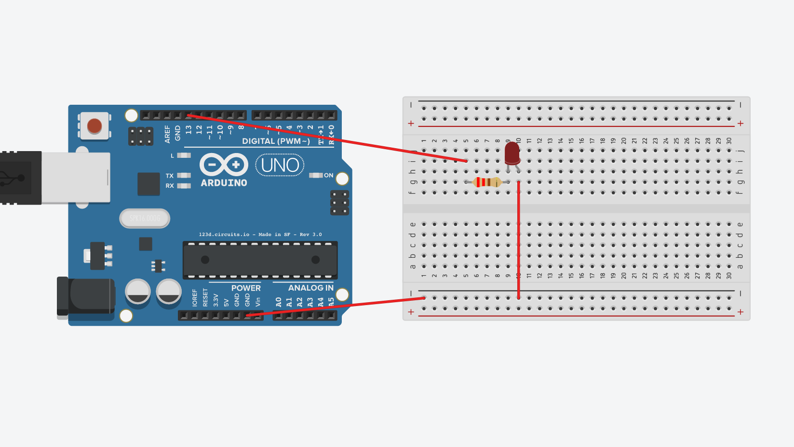

Arduino Examples
Blink Program
Description
Blink is a simple program that will blink an LED attached to the thirteenth pin on the Arduino. By default the LED will blink for a second every two seconds, but this can be configured easily.
Materials
- Arduino
- Breadboard
- LED
- Jumper Wires
- Resistor
Instructions
- Paste the code below into the Arduino IDE
- Set up the breadboard and Arduino in the same configuration as the diagram below.
- Compile and upload the code to the Arduino
- Start the Arduino
Circuit Diagram
Code
// The setup function runs once when the Arduino starts.
void setup() {
pinMode(13, OUTPUT); // Sets pin 13 to output.
}
// The loop function runs over and over again.
void loop() {
digitalWrite(13, HIGH); // Sets pin 13 to high voltage, (on).
delay(1000); // Wait for 1000ms, (1 second).
digitalWrite(13, LOW); // Sets pin 13 to low voltage, (off).
delay(1000); // Wait for 1000ms, (1 second).
}